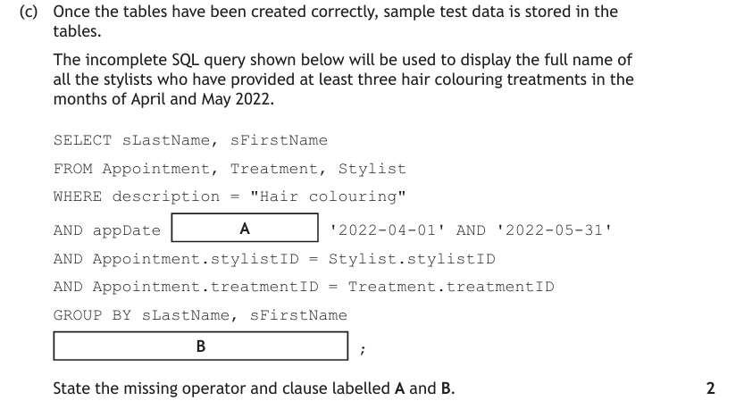
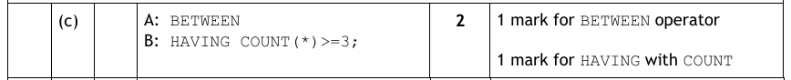
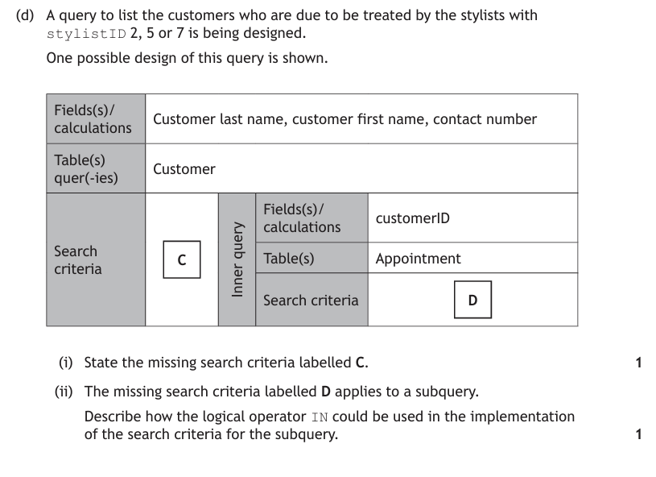
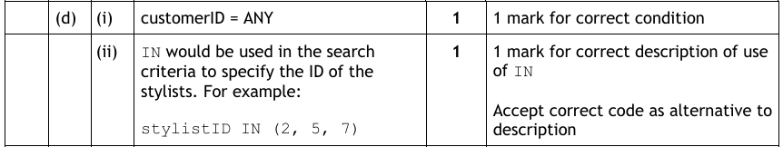
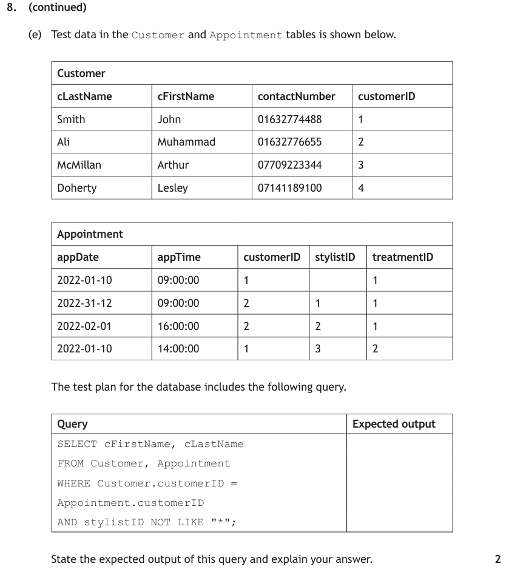
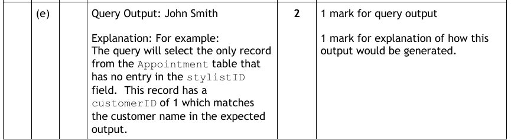
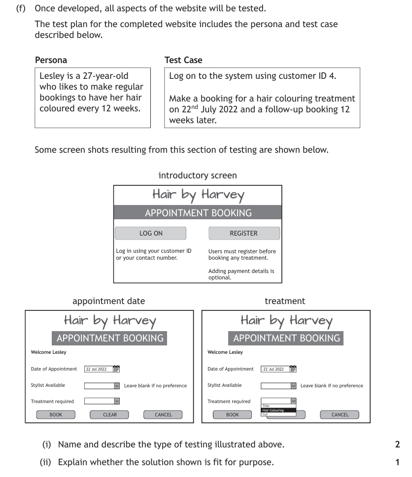
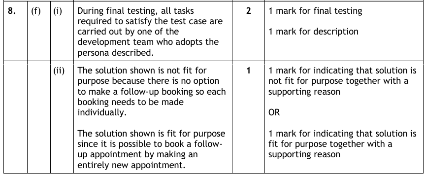

How to Use This Page
The DDD section of the paper ends with a large context question — usually a database-driven website — whose parts jump between ER diagrams, query design, SQL writing, error-spotting and a couple of marks of web-form integration. That mix is the skill being tested: reading a scenario and deciding which tool each part needs.
Work each part on paper first, in exam conditions if you can. Then expand the part to check the marking instructions. The design pages (Query Design, SQL — DML) cover any technique you get stuck on.
2022 Question 8 — Database-Driven Website
First, study the database structure this whole question uses — keep it beside you for every part:

b ER diagram — entity type & participation Design


c Writing SQL Implementation

Before writing: sketch the query design in your head — fields, tables (follow the foreign keys), criteria, grouping, having, sort. Then translate row by row into SQL.
Marking Instructions

d Writing SQL Implementation

Marking Instructions

e Writing SQL Implementation

Marking Instructions

f Web integration — the form question Integration

This is the couple of marks of web knowledge every DDD candidate needs — the theory is on the Web Integration page.
Marking Instructions
